Little Imp Task Report
Parity Task Reports And Visual Verification
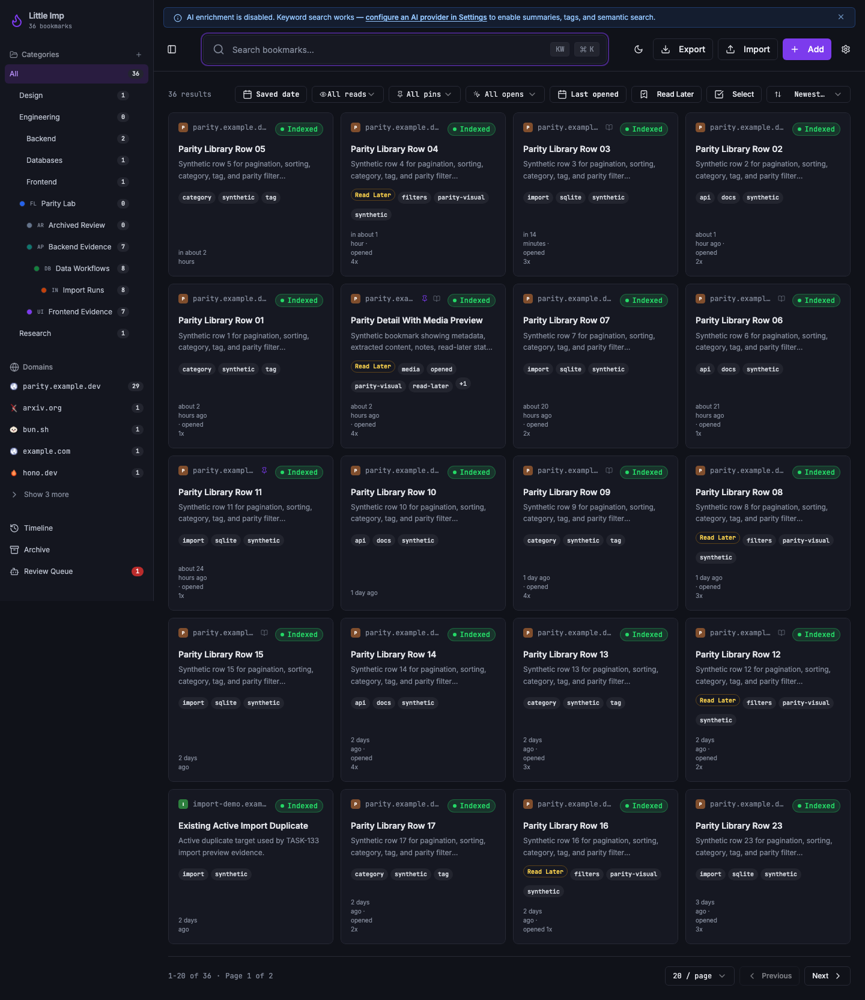
Before
The Grimoire parity tasks already had many focused implementation reports, but the batch still had open PAR-051 and PAR-052 follow-ups for consolidated task-report coverage and a fresh desktop/narrow visual sweep across parity UI surfaces.
Problem
Reviewers needed one place to confirm that bookmark detail, category/tag management, import/export, library pagination/filtering/sorting, and local integration work had visual or documented evidence, with screenshots captured from non-sensitive data.
Changes Added
- Seeded an isolated loopback daemon with synthetic categories, tags, bookmarks, open metrics, read-later/read state, cached media, and import duplicate targets.
- Captured 18 desktop and narrow-width screenshots for category tree states, category/tag detail pages, bookmark detail metadata/media, library filters/sort/pagination, and import preview/result reports.
- Added this TASK-133 report as a batch-level visual index that links back to the existing parity task reports by epic.
Result
The parity report archive now has a single review entry for PAR-051/PAR-052: it records the synthetic capture method, links the prior per-task reports, and stores fresh UI evidence for the requested parity surfaces.
Verification
- Ran an isolated daemon with
DATA_DIR=/tmp/littleimp-task133-data.d0oq9don127.0.0.1:33210and Vite on127.0.0.1:18080. - Captured screenshots with Playwright against the real daemon API and media route.
- Recaptured the bookmark-detail media screenshots through the daemon-hosted static frontend on
127.0.0.1:33210so cached media loaded under the same-origin security policy. - Checked all 18 PNG files with
sips -g pixelWidth -g pixelHeight; every asset has non-zero dimensions. - Visually inspected representative desktop and narrow captures for category, detail, filter, and import states.
Epic Coverage
Bookmark Detail And Metadata
Covers TASK-089, TASK-091, TASK-092, TASK-093, and TASK-094.
Category And Tag Management
Covers TASK-095 through TASK-101.
Import And Export Parity
Covers TASK-107 through TASK-113 plus TASK-120 duplicate policy.
Library Pagination, Sorting, Filters, And Scale
Covers TASK-114 through TASK-119.
- Library pagination
- Server driven sorting
- Library parity filters
- Persist library view preferences
- Aggregate count endpoints
tasks/done/TASK-119-large-library-performance-tests.md
API Docs, Auth, And Capture
Covers TASK-102 through TASK-106. These are API/runtime surfaces, so their visual evidence remains diagram/report based rather than app-screen based.
Screenshot Gallery
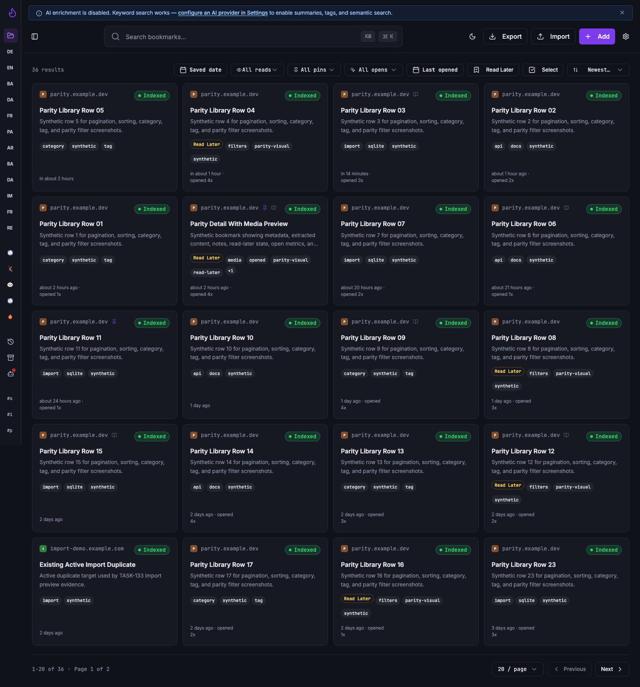
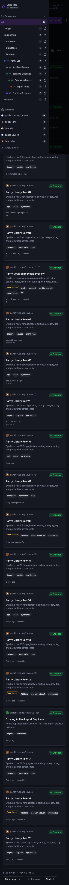
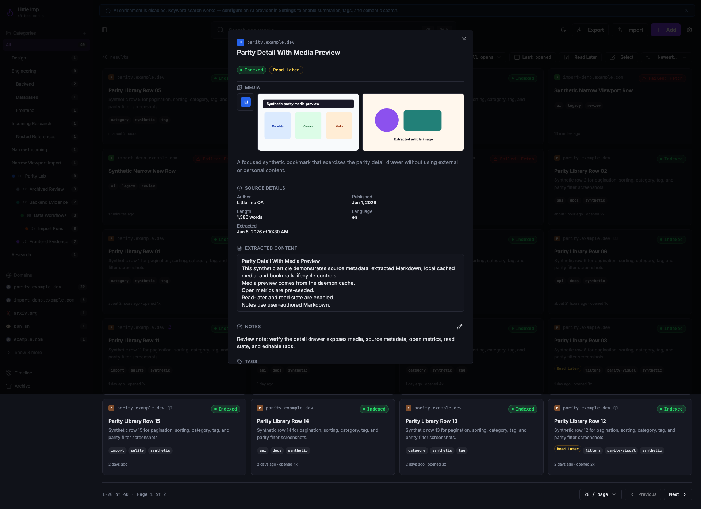
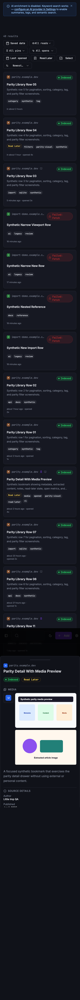
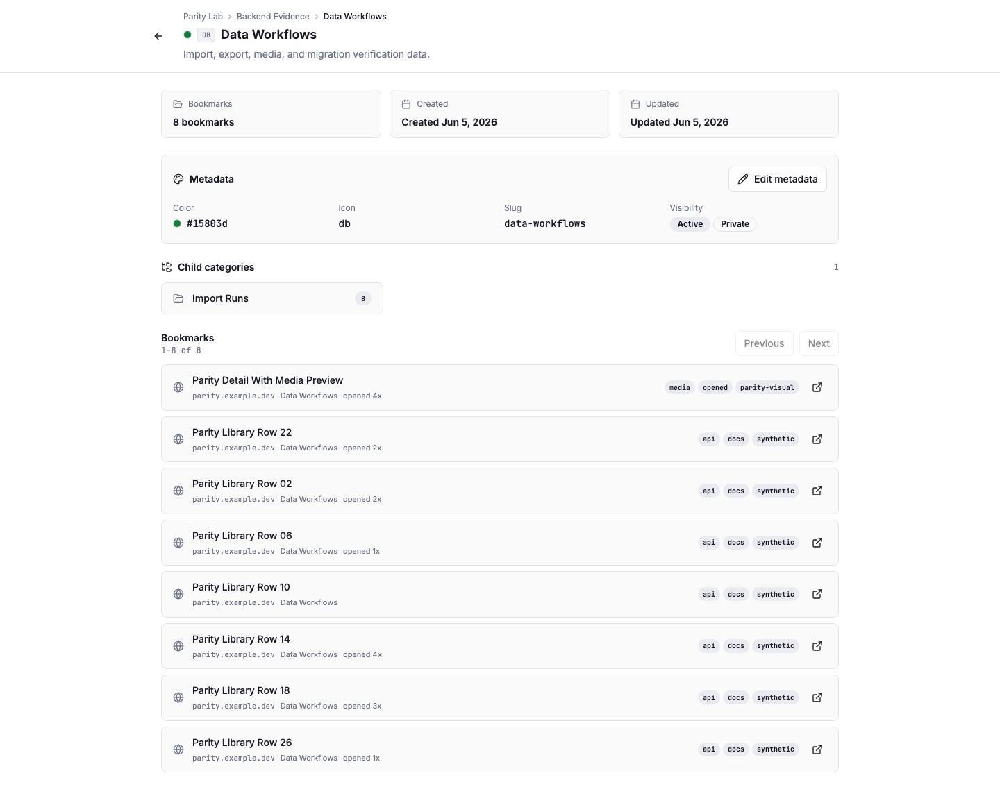
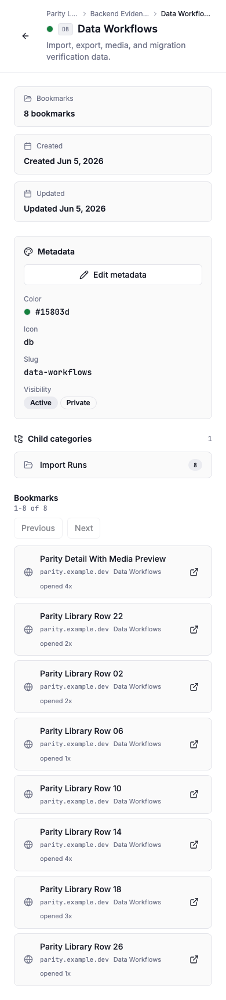
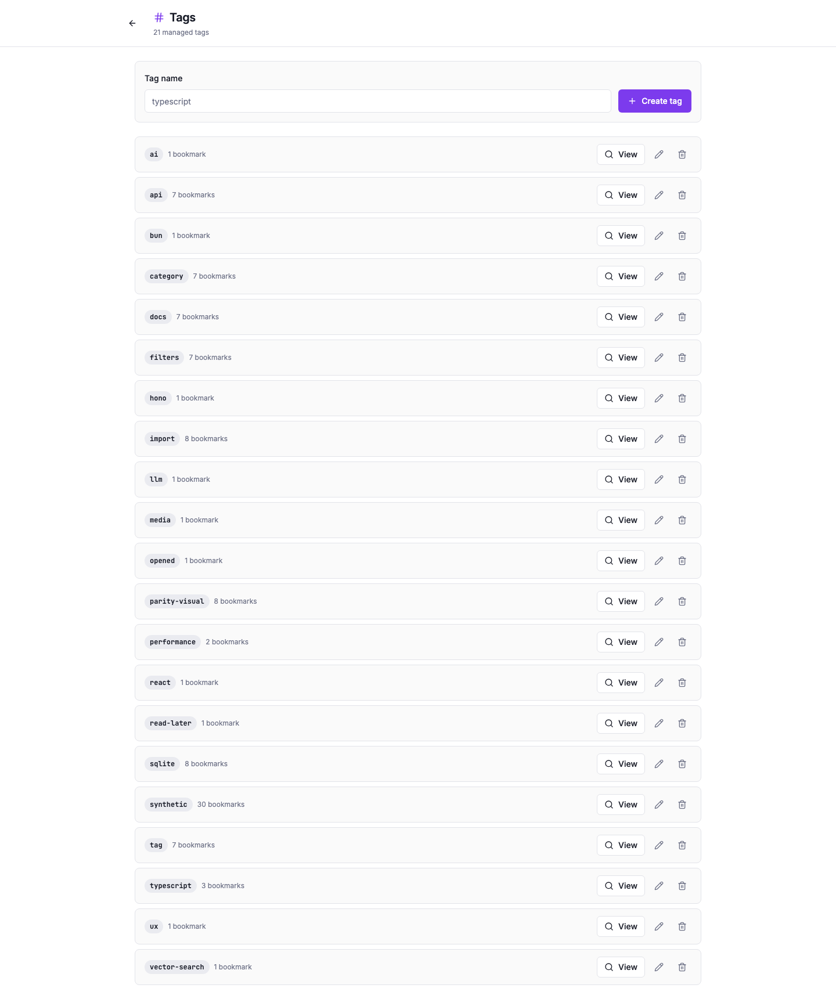
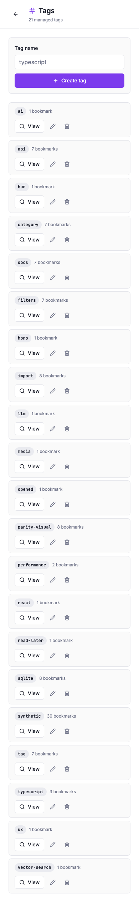
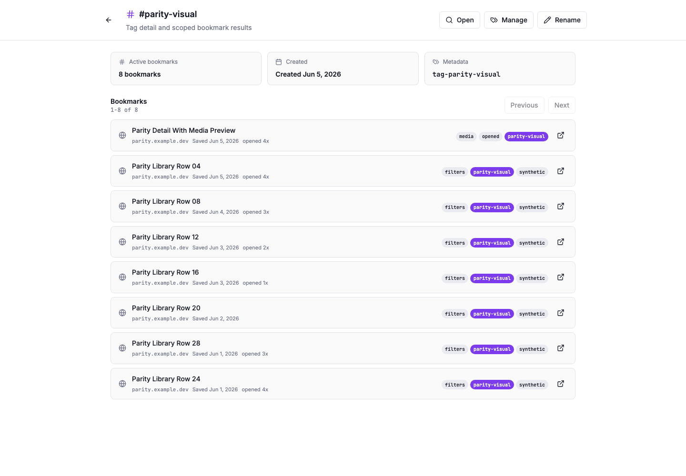
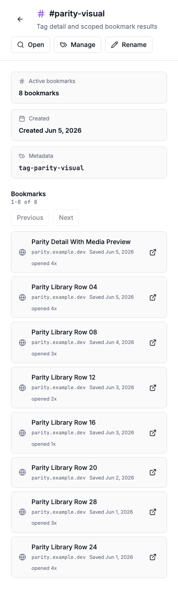
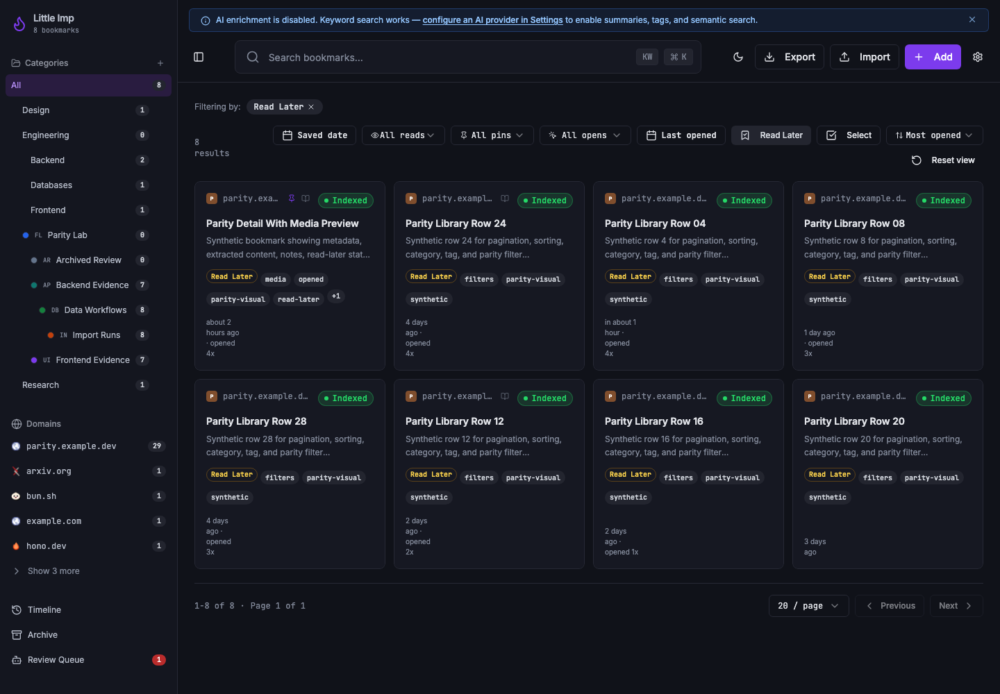
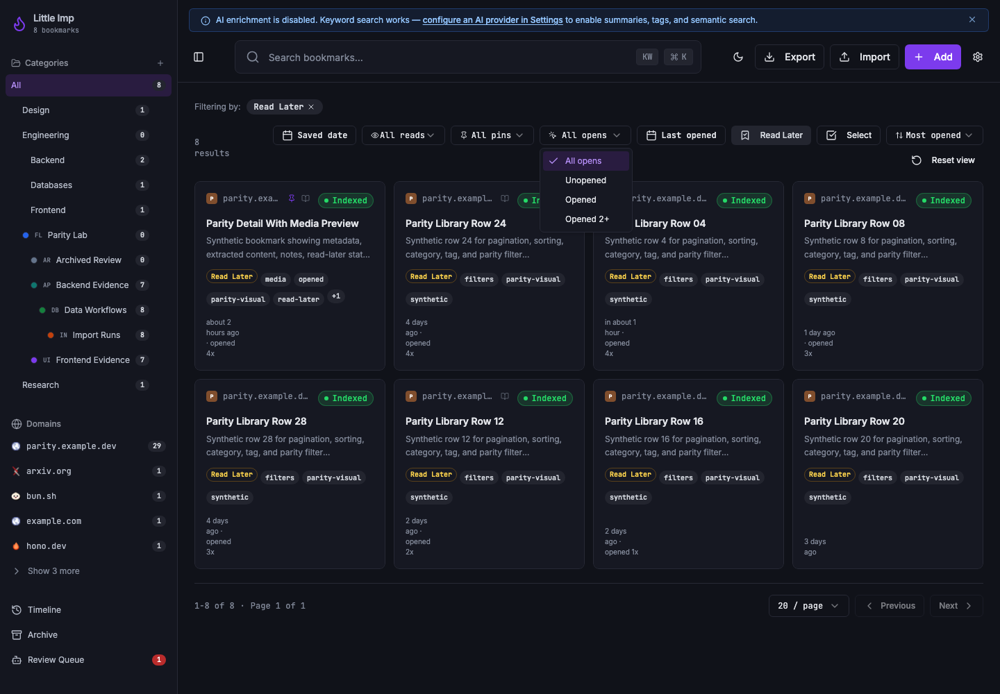
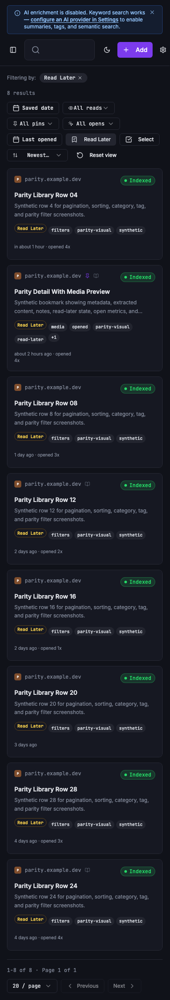
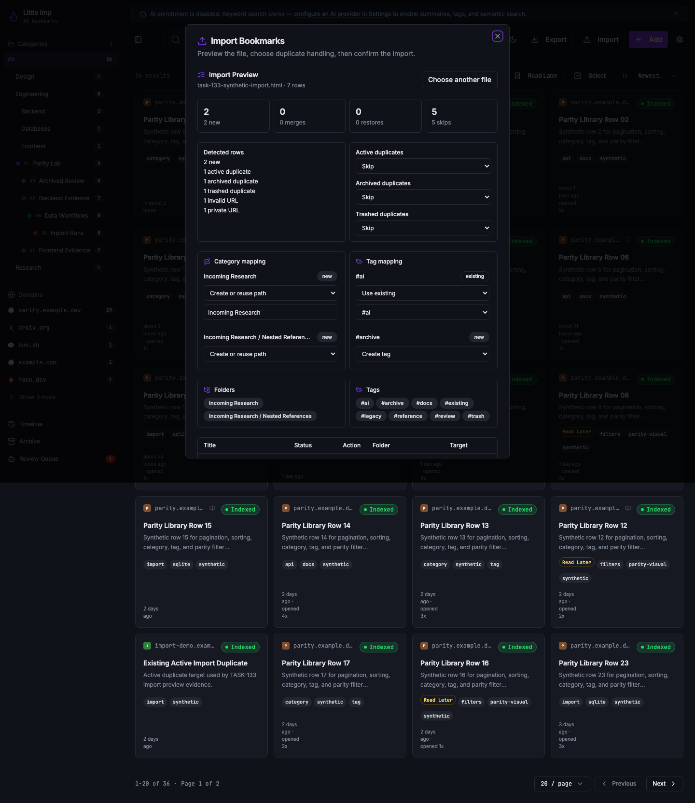
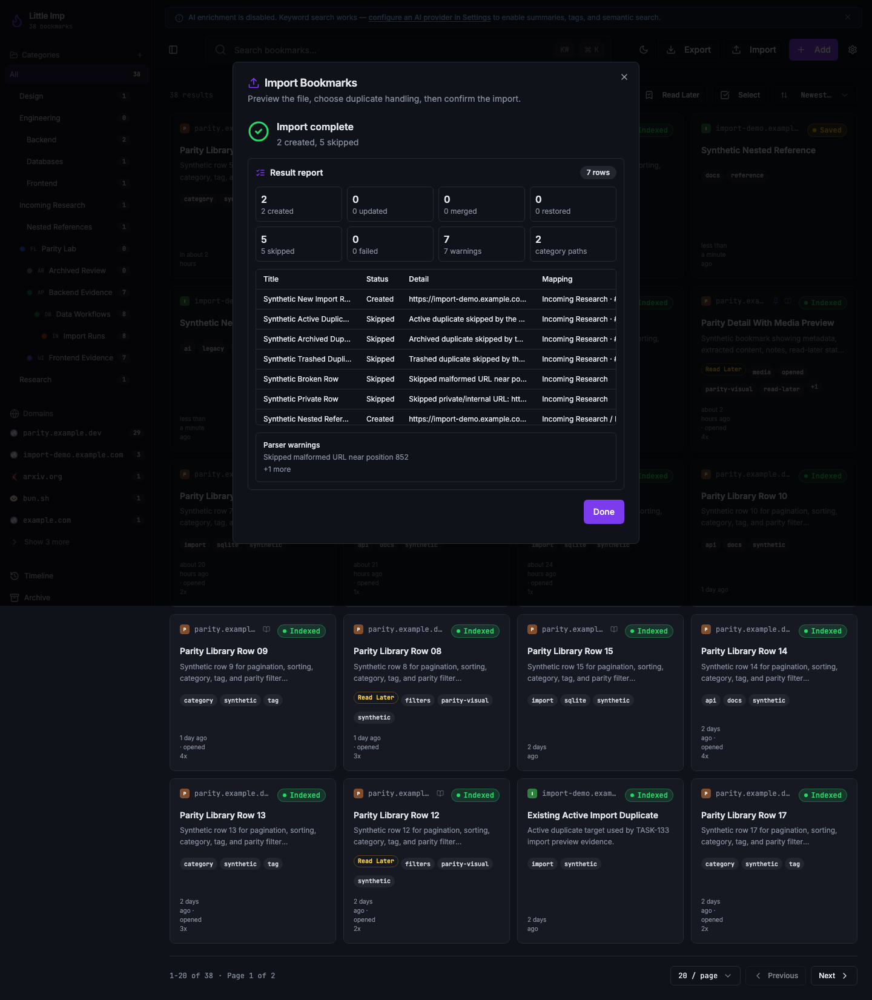
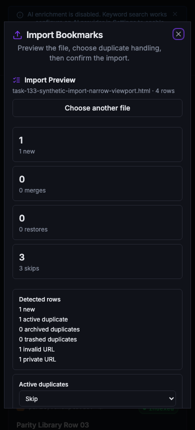
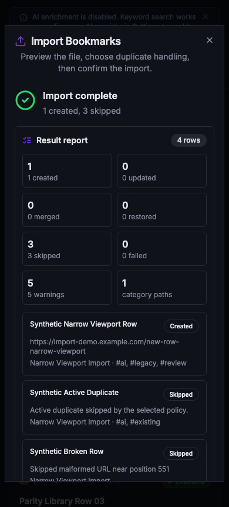
Implementation Notes
The synthetic capture database intentionally used local-only fake domains and a temporary data directory. The media preview images were written as PNG files into the daemon media cache and served through the real /media/bookmarks/:bookmarkId/:mediaId route. The narrow import action is not directly visible below the Tailwind sm breakpoint, so the narrow dialog screenshots were captured by opening the import dialog at a supported width and then resizing to a narrow viewport.
Known Limitations
- TASK-078, TASK-079, and public distribution validation remain blocked by unauthenticated release artifact visibility. This report does not change that release blocker.
- TASK-119 is performance-test evidence, not a visible UI surface; it is linked as task documentation rather than recaptured as a browser screenshot.
- API/auth/capture tasks are primarily contract and runtime behavior surfaces, so this report links their existing diagrams and verification notes.
Files Changed
docs/task-reports/2026/06/2026-06-05-task-133-parity-visual-verification/index.htmldocs/task-reports/2026/06/2026-06-05-task-133-parity-visual-verification/assets/*.pngdocs/task-reports/index.htmldocs/task-reports/2026/index.htmldocs/task-reports/2026/06/index.htmltasks/README.mdtasks/done/TASK-133-parity-task-reports-visual-verification.md